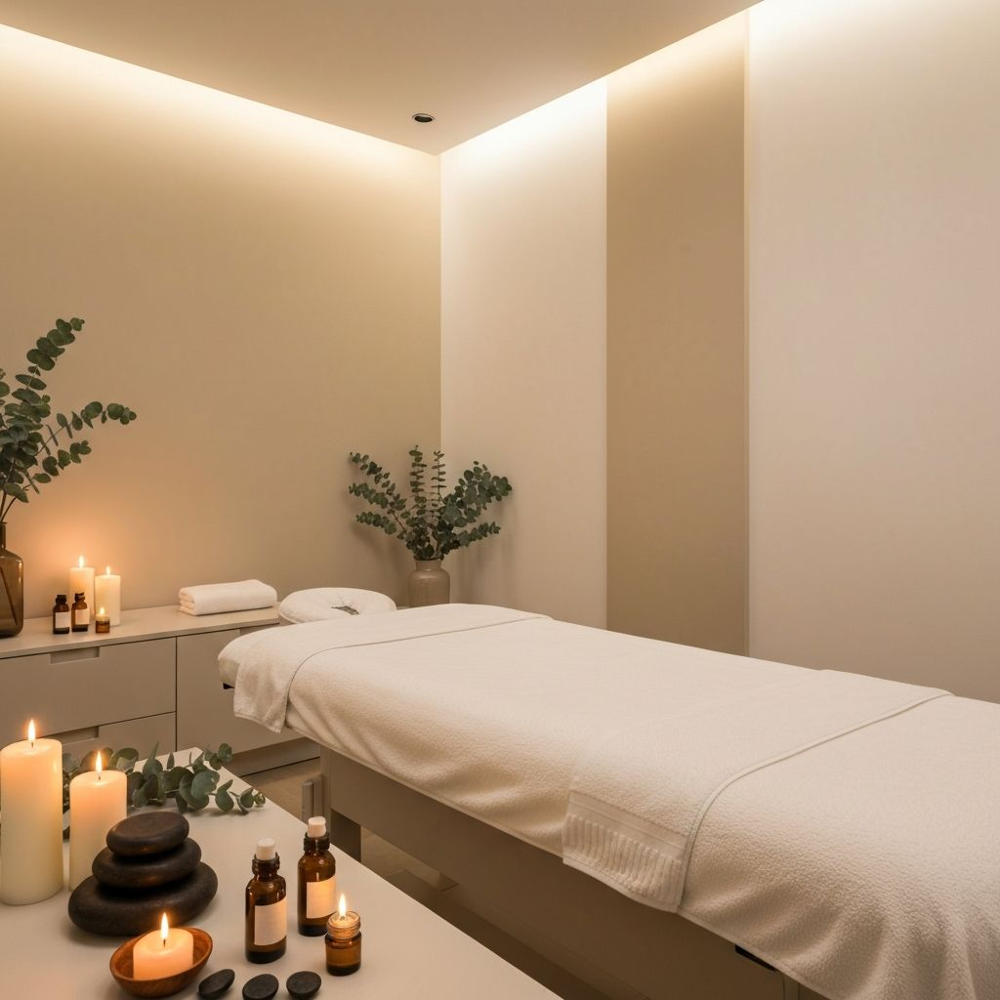

Fisioterapia · Kinesiología · Terapias integrales para el cuerpo y la mente.
Solange
Lic. en Fisiatría y Kinesiología

Soy licenciada en fisiatría y kinesióloga especializada en tratamientos integrales del cuerpo. Mi objetivo es aliviar el dolor, restaurar el equilibrio corporal y acompañar procesos de sanación física y emocional.
Trabajo con terapias manuales, energéticas y rehabilitación para lograr bienestar profundo y duradero. Cada paciente es único, y por eso diseño tratamientos personalizados que abordan las necesidades específicas de cada persona.
Matrícula profesional al día
Cada tratamiento es único
Cuerpo, mente y espíritu
Bienestar completo
Ofrezco una amplia gama de tratamientos diseñados para aliviar el dolor, restaurar el equilibrio y promover la sanación integral.
Alivio de la presión en las articulaciones para mayor movilidad
Liberación de tensiones musculares profundas
Estimulación de puntos reflejos para el equilibrio corporal
Terapia energética para la sanación holística
Presión en puntos específicos para aliviar dolencias
Uso de aceites esenciales para el bienestar
Técnicas manuales para la relajación muscular
Tratamiento terapéutico de tejidos blandos
Recuperación y prevención para deportistas
Medicina tradicional india para el equilibrio
Relajación profunda de cabeza y rostro
Tratamiento especializado del dolor persistente
Recuperación funcional del movimiento
Experiencia sensorial de relajación profunda
Psicoterapia y trabajo del niño interior
Sanación a través del poder de la música
Cada sesión está diseñada para brindarte resultados concretos y duraderos que impacten positivamente en tu bienestar diario.
Tratamientos especializados para reducir y eliminar dolores persistentes
Técnicas que promueven un estado de calma total y descanso reparador
Recuperación del rango de movimiento y flexibilidad articular
Liberación de tensiones acumuladas del día a día
Armonización integral del cuerpo y la mente
Aceleración de la recuperación post-ejercicio y lesiones
Un enfoque completo que considera tu cuerpo, mente y espíritu para lograr una transformación real y duradera.
Un proceso claro y profesional diseñado para brindarte la mejor experiencia terapéutica.
Comenzamos con una entrevista detallada para conocer tu historia clínica, síntomas y objetivos de bienestar.
Realizamos una evaluación física completa para identificar tensiones, bloqueos y áreas que requieren atención.
Aplicamos las técnicas más adecuadas para tu caso, combinando diferentes terapias según tus necesidades.
Te acompañamos en tu proceso de sanación con recomendaciones y sesiones de seguimiento personalizadas.
Conocé el ambiente donde se realizan los tratamientos, diseñado para brindarte la máxima relajación.
Sí, los masajes terapéuticos son muy efectivos para el tratamiento del dolor crónico. Ayudan a reducir la tensión muscular, mejorar la circulación y liberar endorfinas naturales que alivian el dolor. Cada tratamiento se personaliza según las necesidades específicas del paciente.
Sí, es necesario coordinar un turno previo para garantizar una atención personalizada y de calidad. Podés hacerlo fácilmente a través de WhatsApp o el formulario de contacto. Te responderé a la brevedad para confirmar tu cita.
La duración de cada sesión varía según el tratamiento. En general, las sesiones duran entre 45 minutos y 1 hora. Los tratamientos más completos o combinados pueden extenderse hasta 1 hora y media. En la primera consulta evaluamos tus necesidades y definimos el tiempo ideal.
Por supuesto. Muchos de mis pacientes combinan terapias manuales con rehabilitación física para obtener mejores resultados. Este enfoque integral permite abordar tanto los síntomas como las causas subyacentes de las dolencias.
Ofrezco una amplia variedad de terapias que incluyen masajes descontracturantes, reflexología, reiki, digitopuntura, aromaterapia, quiromasajes, masoterapia, masajes deportivos, ayurveda, masaje cráneo facial, y más. El tratamiento se adapta a tus necesidades específicas.
La cantidad de sesiones varía según cada persona y condición. Muchos pacientes experimentan alivio desde la primera sesión. Para condiciones crónicas, generalmente se recomienda un plan de tratamiento de varias sesiones para lograr resultados duraderos.
No esperes más para sentirte mejor. Reservá tu turno y comenzá tu camino hacia una vida más saludable y equilibrada.
Contactame por WhatsApp para agendar tu turno o completá el formulario y te responderé a la brevedad.